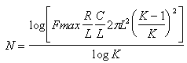

The URC model is derived from a model proposed by L. Gertzberrg in 1974. The model is accomplished by a subcircuit type expansion of the URC line into a network of lumped RC segments with internally generated nodes. The RC segments are in a geometric progression, increasing toward the middle of the URC line, with K as a proportionality constant. The number of lumped segments used, if not specified for the URC line device, is determined by the following formula:

The URC line is made up strictly of resistor and capacitor segments unless the ISPERL parameter is given a non-zero value, in which case the capacitors are replaced with reverse biased diodes with a zero-bias junction capacitance equivalent to the capacitance replaced, and with a saturation current of ISPERL amps per meter of transmission line and an optional series resistance equivalent to RSPERL ohms per meter.
The URCLINE model has the following properties and defaults:
| Property | Default | Description |
L |
- |
Length of transmission line |
N |
See Above |
Number of lumps |
K |
1.5 |
Propagation constant |
FMAX |
1e+009 |
Maximum frequency of interest |
RPERL |
1000 |
Resistance per unit length |
CPERL |
1e-012 |
Capacitance per unit length |
ISPERL |
0 |
Saturation current per length |
RSPERL |
0 |
Diode resistance per length |
See Also: